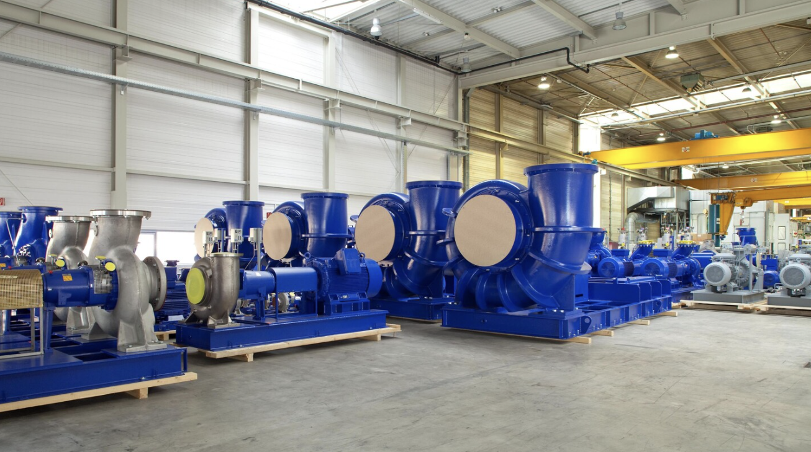
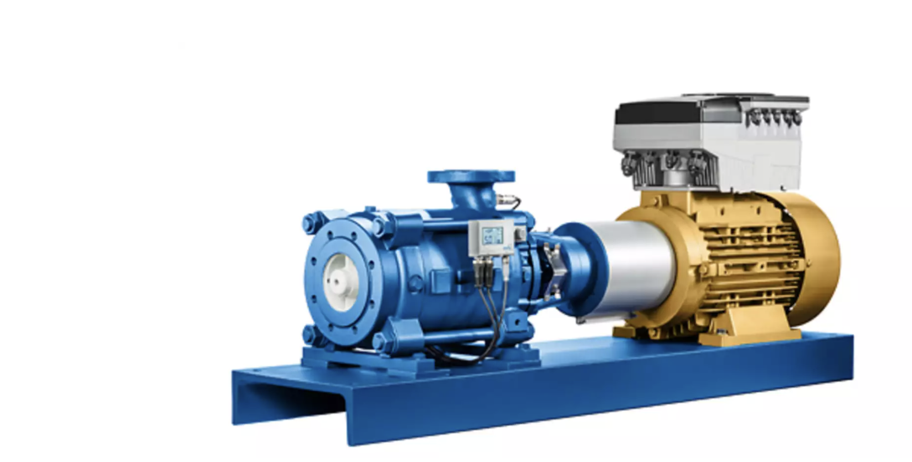
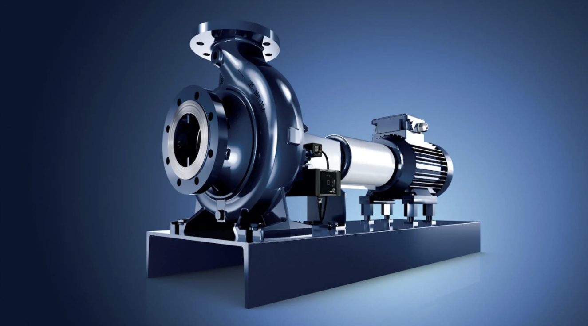
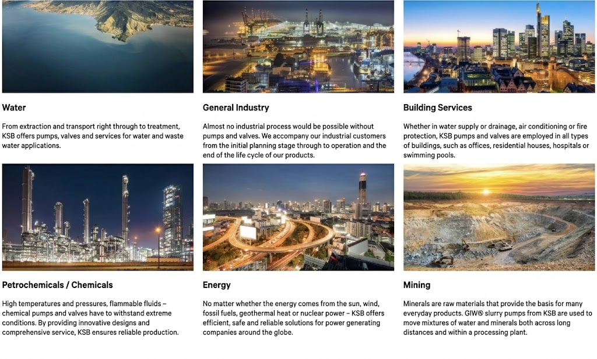

Overview and designations
KSB INDUSTRIAL PUMP
KSB Industrial Pump Technical Specifications: Multi-Industry Fluid Handling Solutions
A comprehensive engineering guide to KSB centrifugal, chemical, submersible, and high-pressure multistage pumps engineered for demanding global industrial applications.
Engineering Excellence in Heavy-Duty Fluid Dynamics
KSB industrial pumps are globally recognized for exceptional hydraulic efficiency, robust mechanical construction, and long Mean Time Between Failures (MTBF). Manufactured in strict compliance with international manufacturing standards—including ISO 2858, ISO 5199, API 610, and API 685—KSB delivers tailored fluid transport systems designed for aggressive, abrasive, high-temperature, and high-pressure industrial environments.
Key Engineering Highlights: Zero-leakage magnetic drive options, optimized low-NPSHr impeller geometries to prevent cavitation, IE4/IE5 super-premium motor compatibility, and advanced predictive monitoring through KSB Guard and PumpDrive automation modules.
Industry-Specific KSB Pump Applications & Technical Specifications
| Target Industry | Process Requirements & Fluid Conditions | Recommended KSB Series & Long-Tail Keywords |
|---|---|---|
| Chemicals & Pharmaceuticals | Corrosive acid transport, toxic fluid containment, solvent circulation, high-purity chemical metering, sterile CIP/SIP washdown routines. | KSB MegaCPK chemical standardized pump, KSB Magnochem magnetic drive pump, ISO 2858 sealless chemical pump, API 685 mag-drive pump. |
| Water & Wastewater Treatment | Municipal sewage lifting, raw water intake, reverse osmosis (RO) high-pressure boost, activated sludge handling, flood control. | KSB Amarex KRT submersible sewage pump, KSB Sewatec non-clog waste pump, KSB Etanorm end-suction water pump, RO desalination pressure booster. |
| Power Generation & Wind Energy | High-pressure boiler feedwater, steam condensate extraction, main cooling water circulation, geothermal brine pumping, wind turbine loop cooling. | KSB HGB / CPT boiler feed pump, KSB Multitec high-pressure multistage pump, KSB Calio glandless circulator, thermal fluid transfer pump. |
| Oil & Gas (Upstream & Downstream) | Refinery hydrocarbon processing, offshore platform crude oil feed, LPG/LNG fluid transfer, pipeline boosting, explosion-hazard pumping. | KSB RPH API 610 OH2 process pump, KSB CHTR barrel casing pump, ATEX certified explosion-proof process pump, API 610 heavy-duty pump. |
| Mining, Minerals & Cement | Abrasive mineral slurry transport, mine tailings disposal, open-pit dewatering, lime milk slurry feed, aggregate washing lines. | KSB GIW® heavy-duty slurry pump, KSB LCC abrasive slurry pump, rubber-lined mineral processing pump, high-head mine dewatering pump. |
| Food & Beverage, Plastics & Rubber | Hygienic liquid processing, dairy ingredient flow, mold thermal control, polymer additive metering, high-temperature heat transfer oil. | KSB Vitalobe hygienic rotary lobe pump, KSB Movitec vertical multistage stainless pump, thermal oil heat transfer pump. |
| Pulp & Paper, Ports & Construction | Paper stock consistency pumping, black liquor circulation, construction site groundwater drainage, dry-dock ballast water transfer, hydraulic lifting. | KSB Etaprime self-priming pump, KSB Cleanline stock pump, axial flow ballast water pump, heavy-duty construction dewatering pump. |
Material Options & Hydraulic Engineering Advantages
To accommodate severe operating conditions, KSB industrial pumps are offered in a broad range of high-grade metallurgy options:
- Metallurgy Selection: Cast Iron, Ductile Iron, Cast Steel, Stainless Steel (1.4408 / 316), Duplex / Super Duplex stainless steel, and proprietary highly corrosion-resistant Noridur® alloy.
- Cavitation Resistance: Precision-engineered impellers engineered to deliver low Net Positive Suction Head required (NPSHr) values, ensuring safe operation under tight suction pressure margins.
- Sealing Versatility: Options ranging from standard mechanical seals (single and double-acting) to gland packing and 100% leak-free magnetic drive couplings for toxic fluid containment.
High-efficiency pumps and valves from KSB help ensure that our customers can realise sustainable and reliable production.KSB INDUSTRIAL PUMP.
Our industrial customers are very well aware of the fact that KSB provides technologically advanced pumps and valves as well as customised solutions that fulfil even the most complex of requirements. We accompany them from initial planning through to operation and the end of the life cycle of our products, which are known for their high operating efficiency and sustainability.
Our industrial customers are very well aware of the fact that KSB provides technologically advanced pumps and valves as well as customised solutions that fulfil even the most complex of requirements. We accompany them from initial planning through to operation and the end of the life cycle of our products, which are known for their high operating efficiency and sustainability. WeDrive ensures high-precision power transmission with KSB PUMP technology.

Industry forms the backbone of the global economy. And as such, none of its sectors could exist without the use of pumps and valves. Reliable and highly energy-efficient solutions from KSB are extremely cost-effective and help industrial companies as well as OEM partners improve their carbon footprint. It is not uncommon for us to have known our customers throughout many industrial sectors for decades, and we accompany them in all regions of the world. It therefore comes as no surprise that we are very familiar with the industries out there and the individual needs and requirements they have. The industry uses our pumps and valves in future fields such as life sciences, biofuels and hydrogen technology as well as in more conventional application scenarios, including cooling systems found in trains and wind power plants. What all applications share is the fact that the close partnerships we foster with end users and our OEM partners around the world allow us to continually supply or jointly develop optimal products and solutions for the respective application.

At KSB, it is not enough to simply move with the times since we also want to shape the future together with our partners. For more than 150 years(opens in a new tab), we have been relying on the innovative spirit, know-how and commitment of our employees. Take, for example, the fact that KSB recognised the wealth of opportunities afforded by such technologies as additive manufacturing(opens in a new tab) and digitalisation(opens in a new tab) at an early stage. KSB’s pumps and valves are now networked, and complex components and spare parts can be manufactured precisely and according to individual requirements using 3D printing technology.
